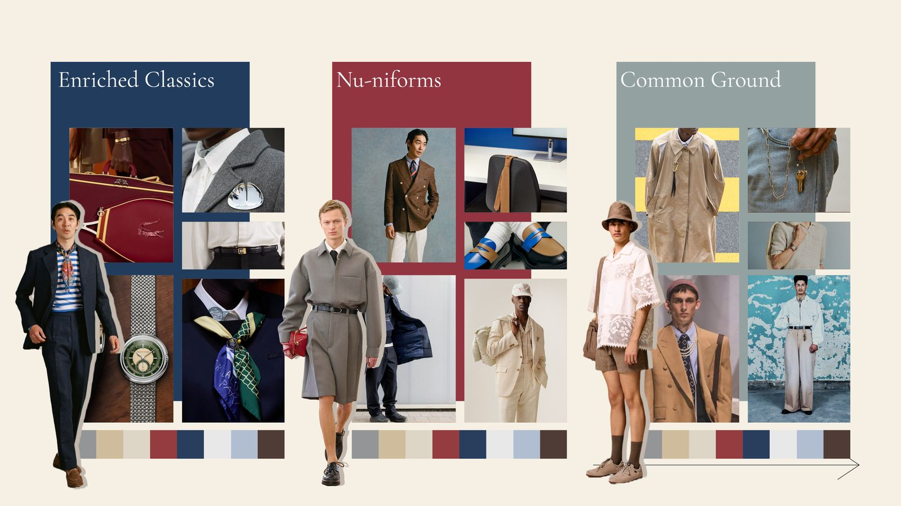

Directing global seasonal trend strategy across 7+ heritage brands
Each season, our design team needed to develop cohesive trend narratives that could translate across 7+ distinct heritage brands — each with its own identity, consumer base, and retail partnerships. The challenge wasn't just identifying trends; it was building a seasonal point of view that felt authentic to every brand while maintaining a unified creative vision across the entire portfolio.
I owned this process end-to-end: from early-stage market research and competitive shopping through trend book creation, team alignment, and final client-facing showroom presentations. Getting it right meant balancing instinct with data, creative ambition with commercial reality, and brand heritage with cultural relevance.
Every season started with deep immersion. I led competitive shopping trips, trend service analysis, and cross-industry research to build a foundation of insights. This wasn't about chasing what was trending online — it was about identifying the cultural undercurrents, material innovations, and color shifts that would define the market 12–18 months out.
I synthesized these findings into a clear seasonal direction that became the creative north star for every brand in our portfolio. This research phase was critical — it gave the team shared language and conviction before a single sketch was drawn.
Understanding the competitive landscape was essential to positioning each brand effectively. I organized and led comprehensive comp shopping sessions, documenting everything from pricing architecture and material quality to display strategies and assortment gaps. These insights shaped not just our design direction, but how we presented and merchandised each collection to retail partners.

"Great trend direction isn't about predicting the future — it's about giving your team the clarity and conviction to design with purpose."
The trend book was the centerpiece of each season — a comprehensive document that distilled months of research into a compelling creative narrative. Each book included color palettes, material direction, silhouette evolution, hardware trends, and visual mood boards tailored to the specific brand and its retail partners.
I designed and directed these books to serve a dual purpose: internal alignment tool for our design teams and a client-facing presentation piece for showroom meetings. They needed to be visually polished enough to impress a VP of Merchandising at Target, while being practical enough to guide a junior designer through the season's aesthetic.


This process became the backbone of how our team operated seasonally. By establishing a rigorous, repeatable trend development framework, I created consistency across brands without sacrificing the individuality that made each one resonate with its audience. Design teams had a clear direction from day one, sales teams had compelling stories to tell retail partners, and our clients saw a level of strategic sophistication that strengthened long-term partnerships.
The trend books and showroom presentations I developed became a competitive differentiator — proof that we weren't just filling orders, but leading the conversation on where the market was heading.